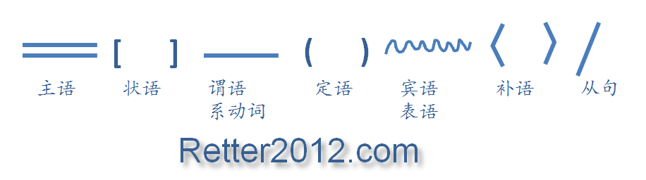

返回主页
语法分析和符号约定

德语严谨，适合作为科技语言。任何事情都有两面，有时候一句话三五十个字，连谓语动词都不容易找到。
建议首先学习构词法和基本语法，解决查字典的问题。德语单词变化复杂，不容易在字典里面查到的。除非，你了解了变化的规则。
德语词汇近20万，要背单词是不可能的。所以，一定要记住变化规则。另外，通过句子和短文背单词效果良好。
语法方面的书籍可以用华宗德的就行了。
德语五大发音秘诀
疯狂德语的方法
中国教育部的领导要注意了，大力推进英语教育没有错。1750年，伏尔泰（Voltaire）从德国的波茨坦报告说“我在这儿就像生活在法国。人们只讲我们的语言（法语），只是对士兵和马才使用德语”。而Frederick William II 极端蔑视德语，直到他成功统一德国。Frederick William II 打败法国之后，法语才逐步退出德国上层社会。
Frederick William II (German: Friedrich Wilhelm II.; 1744 �C 1797) was King of Prussia, from 1786 until his death.
德语严格遵守语法，特别叫真。太长的句子不通过语法分析是读不懂的。但初学者不要把自己吓死了，德语语法比英语复杂很多的。所以，建议先背诵句子和短语，有了语感和词汇后，再找主谓宾。最后挑战原文或名言。
语法大作战：典型句型
语法大作战：从句（1）
语法大作战：从句（2）
语法大作战：从句（3）
语法大作战：因果（1）
语法大作战：因果（2）
version:1.0; jobnet@188.com © retter2012.com